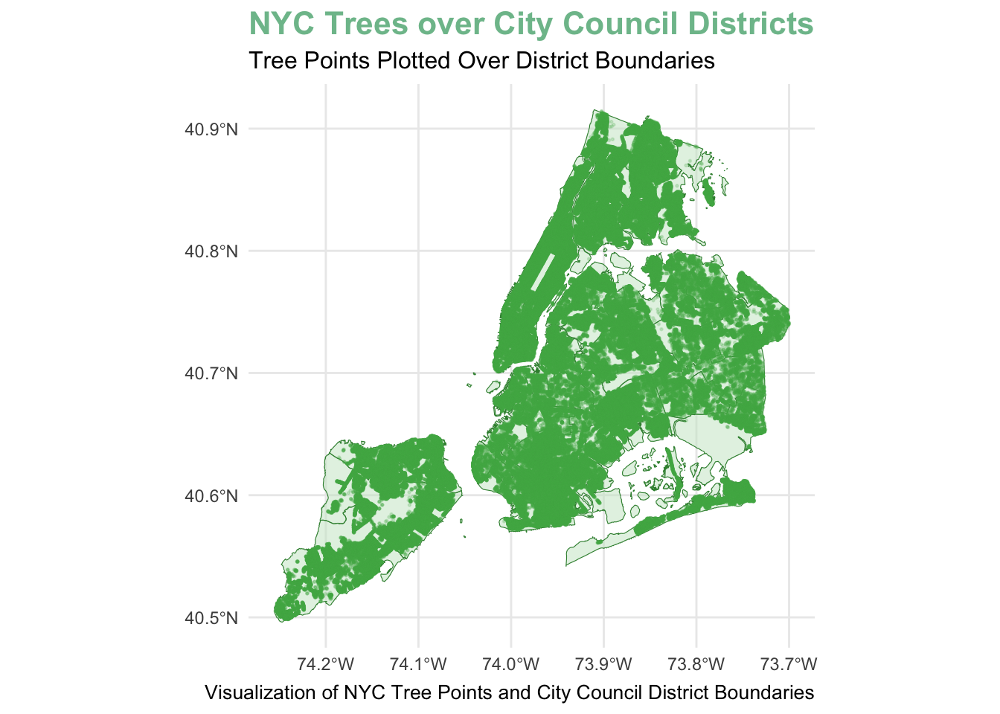
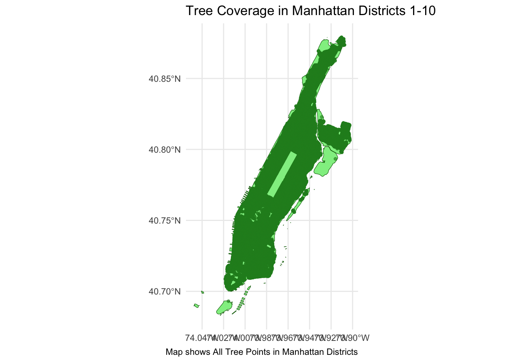
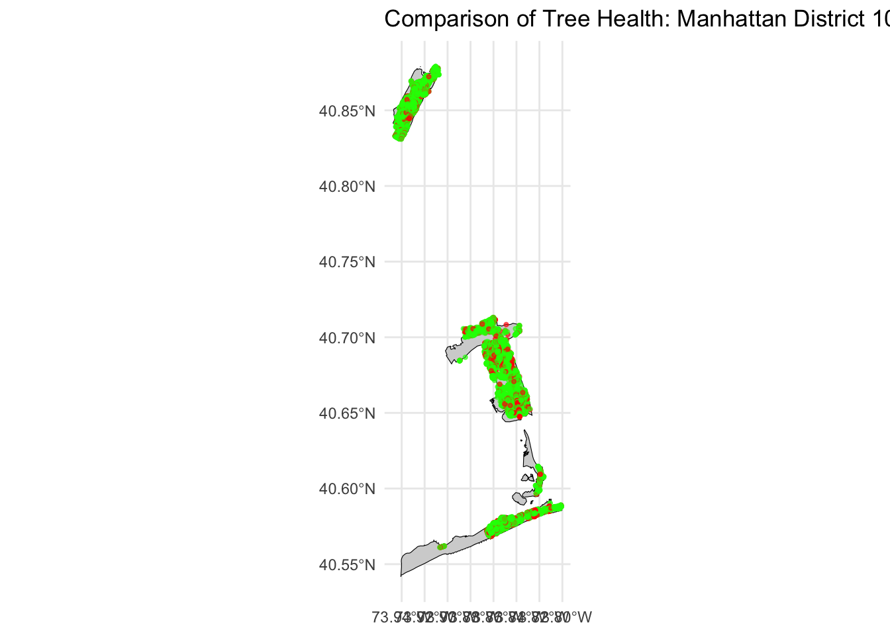

Mini-Project #03: Visualizing and Maintaining the Green Canopy of NYC
Author
DEANNA BRUNO
Grove of American Elms, the Under-Appreciated Landscape of NYC. Amanda Quaid/untapped new york.
Executive Summary
New York City’s beautiful greenery is often overshadowed by the skyline of towering skyscrapers. However, it’s an incredibly important part of the city’s environmental health and the well-being of its many residents. This project analyzes the distribution, species, and health of trees across NYC council districts.
Acquiring Data
Task 1: Download NYC City Council District Boundaries
In order to visualize and analyze the under-appreciated greenery of New York City, we first must acquire geographical boundaries of the NYC City Council Districts. By downloading the shape file and thoroughly prepping it for analysis, we are now able to map tree coverage data accurately within each district. 3 First, let’s start by downloading our packages:
Click to show code
cat("Loading packages...\n")
Loading packages...
Click to show code
library(sf)
Linking to GEOS 3.13.0, GDAL 3.8.5, PROJ 9.5.1; sf_use_s2() is TRUE
── Conflicts ────────────────────────────────────────── tidyverse_conflicts() ──
✖ dplyr::filter() masks stats::filter()
✖ dplyr::lag() masks stats::lag()
ℹ Use the conflicted package (<http://conflicted.r-lib.org/>) to force all conflicts to become errors
# Function to download NYC tree pointsdownload_tree_points <-function(limit =10000, max_pages =500) {if (!dir.exists("data/mp03")) dir.create("data/mp03", recursive =TRUE) base_url <-"https://data.cityofnewyork.us/resource/hn5i-inap.geojson" all <-list()for (page in0:(max_pages-1)) { offset <- page * limit file <-sprintf("data/mp03/tree_%06d.geojson", offset)if(!file.exists(file)) {cat("Downloading rows", offset +1, "to", offset + limit, "...\n") res <- httr2::request(base_url) |> httr2::req_url_query(`$limit`= limit, `$offset`= offset) |> httr2::req_perform() temp <-try(sf::st_read(res$body, quiet =TRUE), silent =TRUE)if(inherits(temp, "try-error") ||nrow(temp) ==0) {cat("No more data. Stopping.\n")break } sf::st_write(temp, file, quiet =TRUE) } dat <- sf::st_read(file, quiet =TRUE)if("planteddate"%in%names(dat)) dat$planteddate <-as.character(dat$planteddate) all[[length(all)+1]] <- datif(nrow(dat) < limit) break } trees_all <- dplyr::bind_rows(all)cat("NYC Tree Points data is ready to use.\n", nrow(trees_all), "trees\n")return(trees_all)}
Task 1: Load NYC City Council Districts
Now we can download data from the NYC Department of Planning website:
Click to show code
download_council_district_boundaries <-function() {# Create folder if neededif (!dir.exists("data/mp03")) dir.create("data/mp03", recursive =TRUE)# Paths zip_file <-"data/mp03/nycc_25c.zip" upz_dir <-"data/mp03/nycc_25c"# Download zip if missingif (!file.exists(zip_file)) {download.file("https://s-media.nyc.gov/agencies/dcp/assets/files/zip/data-tools/bytes/city-council/nycc_25c.zip", zip_file, mode ="wb" ) }# Unzip if folder emptyif (length(list.files(upz_dir, pattern ="\\.shp$")) ==0) {unzip(zip_file, exdir = upz_dir) }# Make sure we have the .shp path# Unzip if folder emptyif (!dir.exists(upz_dir)) dir.create(upz_dir)if (length(list.files(upz_dir, pattern ="\\.shp$", recursive =TRUE)) ==0) {unzip(zip_file, exdir = upz_dir)}# Make sure we have the .shp pathshp_file <-list.files(upz_dir, pattern ="\\.shp$", full.names =TRUE, recursive =TRUE)if(length(shp_file) ==0) stop("Could not find shapefile after unzipping!")# Read and transform districts <- sf::st_read(shp_file[1], quiet =TRUE) |> sf::st_transform(crs ="WGS84")return(districts)}
Click to show code
# Load districts and treesdistricts <-download_council_district_boundaries()trees <-download_tree_points(limit =10000, max_pages =500)
Downloading rows 370001 to 380000 ...
No more data. Stopping.
NYC Tree Points data is ready to use.
370000 trees
Simply put, the shape file was downloaded from NYC Department of Planning website, unzipped, and read into R as an ‘sf’ object for spatial data. The geometry was transformed to the *WGS84 projection, which is standard for mapping across other data sets. Finally, by confirming that 51 total districts were loaded and ready for analysis, we can proceed to the next task.
NYC Tree Points
Task 2: Download Tree Points
Now that we have the NYC City Council District Boundaries, we can begin to download the NYC Tree Points data set. This data set contains information about individual trees in New York City, including their species, health status, and location. It will be marked on the map, to truly provide a visual that skyscrapers aren’t the only things that make NYC great.
Click to show code
# Downloading NYC Tree Points data (simplified, httr2-compliant)download_tree_points <-function(limit =10000, max_pages =500) {# Create folder if neededif (!dir.exists("data/mp03")) dir.create("data/mp03", recursive =TRUE) base_url <-"https://data.cityofnewyork.us/resource/hn5i-inap.geojson" all <-list()for(page in0:(max_pages-1)) { offset <- page * limit file <-sprintf("data/mp03/tree_%06d.geojson", offset)if(!file.exists(file)) {cat("Downloading rows", offset +1, "to", offset + limit, "...\n")# httr2 request res <- httr2::request(base_url) |> httr2::req_url_query(`$limit`= limit, `$offset`= offset) |> httr2::req_perform() temp <-try(sf::st_read(res$body, quiet =TRUE), silent =TRUE)if(inherits(temp, "try-error") ||nrow(temp) ==0) {cat("No more data. Stopping.\n")break }# Save page sf::st_write(temp, file, quiet =TRUE) }# Read saved file and ensure planteddate is character dat <- sf::st_read(file, quiet =TRUE)if("planteddate"%in%names(dat)) dat$planteddate <-as.character(dat$planteddate) all[[length(all)+1]] <- dat# Stop if last pageif(nrow(dat) < limit) {cat("Reached last page.\n")break } }# Combine all pages safely trees_all <- dplyr::bind_rows(all)cat("NYC Tree Points data is ready to use.\n", nrow(trees_all), "trees\n")return(trees_all)}
The NYC tree points data set was downloaded directly and responsibly from the NYC OpenData Forestry Tree Points API. The data is collected in chunks of 5,000 rows at a time, is saved as *GeoJSON files using st_read(), and then combined into a single ‘sf’ data frame for further analysis. The complete data set is over 100,000 trees, including information regarding their species, health status, and coordinates- which is perfect for mapping!
Data Integration and Initial Exploration
Task 3: Plot All Tree Points
Now that both the NYC City Council District Boundaries and NYC Tree Points data sets are downloaded and prepped responsibly, we can start to create visualizations of the tree points on a map using ggplot2. The trees are plotted as data points using geom_sf(), with the district boundaries added to be displayed as polygons.
Click to show code
# Loading data to create plot visualizationggplot() +# District boundariesgeom_sf(data = districts, fill ="#C8E6C9", color ="#388E3C", alpha =0.5, size =0.5) +# Tree pointsgeom_sf(data = trees, aes(geometry = geometry), color ="#4CAF50", alpha =0.2, size =0.3) +labs(title ="NYC Trees over City Council Districts",subtitle ="Tree Points Plotted Over District Boundaries",caption ="Visualization of NYC Tree Points and City Council District Boundaries") +theme_minimal() +theme(plot.title =element_text(face ="bold", size =16, color ="#7EBF9A"),plot.subtitle =element_text(size =12),plot.caption =element_text(size =10))

The resulting plot above shows a clear distribution of trees across all NYC City Council districts. Each green dot represents a single tree, and the district boundaries are outlined in dark green. There are quite a lot of trees throughout the city, as we can see plenty of clustered areas, which will be quite useful for the district-level analyses we will conduct in the next step.
District-Level Analyses of Trees
Task 4: District-Level Analysis of Tree Coverage
Now we’re able to answer the following questions about tree coverage in NYC City Council Districts:
1. Which council district has the most trees?:
We can see that District 50 has the most amount of trees with a total of 6,467.
2. Which council district has the highest density of trees?:
District 10 has the highest density of trees.
3. Which district has highest fraction of dead trees out of all trees?:
District 32 has the highest fraction of dead trees, with approximately ~28.2% of its trees dead.
4. What is the most common tree species in Manhattan?:
The most common tree species in Manhattan is named Pyrus calleryana - Callery pear.
5. What is the species of the tree closest to Baruch’s campus?:
The species of the tree closest to Baruch’s campus is again Pyrus calleryana - Callery pear.
Click to show code
# Join tree points with district boundariestrees_districts <-st_join(trees, districts, join = st_within)# Add borough information based on district numberstrees_districts <- trees_districts %>%mutate(borough =case_when(CounDist %in%1:10~"Manhattan",CounDist %in%11:18~"Bronx",CounDist %in%19:32~"Queens",CounDist %in%33:48~"Brooklyn",CounDist %in%49:51~"Staten Island",TRUE~NA_character_))# The following answers question #1: Which council district has the most trees?most_trees <- trees_districts %>%group_by(CounDist) %>%summarise(num_trees =n()) %>%arrange(desc(num_trees))most_trees
# The following answers question #2: Which council district has the highest density of trees? The Shape_Area column from the district shape file will be helpful here.density_trees <- trees_districts %>%group_by(CounDist, Shape_Area) %>%summarise(num_trees =n()) %>%mutate(tree_density = num_trees / Shape_Area) %>%arrange(desc(tree_density))
`summarise()` has grouped output by 'CounDist'. You can override using the
`.groups` argument.
# The following answers question #3: Which district has highest fraction of dead trees out of all trees?dead_fraction <- trees_districts %>%group_by(CounDist) %>%summarise(total =n(),dead =sum(tpcondition =="Dead", na.rm =TRUE),dead_fraction = dead / total) %>%arrange(desc(dead_fraction))dead_fraction
# The following answers question #4: What is the most common tree species in Manhattan?manhattan_species <- trees_districts %>%filter(borough =="Manhattan") %>%group_by(genusspecies) %>%summarise(count =n()) %>%arrange(desc(count))manhattan_species
Simple feature collection with 236 features and 2 fields
Geometry type: GEOMETRY
Dimension: XY
Bounding box: xmin: -74.01836 ymin: 40.69303 xmax: -73.90257 ymax: 40.879
Geodetic CRS: WGS 84
# A tibble: 236 × 3
genusspecies count geometry
<chr> <int> <MULTIPOINT [°]>
1 Gleditsia triacanthos var. inermis - Thornle… 13980 ((-73.99517 40.76898), (…
2 Pyrus calleryana - Callery pear 7836 ((-74.00102 40.76115), (…
3 Ginkgo biloba - maidenhair tree 5982 ((-74.00173 40.76099), (…
4 Quercus palustris - pin oak 4944 ((-73.99616 40.76763), (…
5 Platanus x acerifolia - London planetree 4651 ((-73.99817 40.75914), (…
6 Styphnolobium japonicum - Japanese pagoda tr… 4363 ((-73.996 40.76749), (-7…
7 Zelkova serrata - Japanese zelkova 4217 ((-73.99521 40.76891), (…
8 Tilia cordata - littleleaf linden 3358 ((-73.99346 40.76626), (…
9 Unknown - Unknown 1871 ((-73.99489 40.76901), (…
10 Ulmus americana - American elm 1781 ((-73.99613 40.76767), (…
# ℹ 226 more rows
Click to show code
# The following answers question #5: What is the species of the tree closest to Baruch’s campus?new_st_point <-function(lat, lon, ...) {st_sfc(st_point(c(lon, lat))) |>st_set_crs("WGS84")}baruch_point <-new_st_point(40.738, -73.983)closest_tree <- trees_districts %>%mutate(distance_to_baruch =st_distance(geometry, baruch_point)) %>%arrange(distance_to_baruch) %>%slice(1)closest_tree
The proposal of “Revive Manhattan’s Green Canopy” brings to light the city’s grave problem with the number of dead and not maintained trees in Manhattan’s council district- even more than the flashing billboards of Time Square! To address this, this initiative will focus mainly on replacing the dead trees, planting new and native species, and consistent maintenance to ensure the health of all greenery across NYC. This should improve the safety of the residents living within the staple city, the environmental quality, and community engagement for a good cause.
To simplify the proposal, here are the key components: - Replace dead trees - New plantings: 800 native species trees
- Maintenance of risky trees: 300 trees identified with risk rating
- Community engagement: Community planting events across each district
Zoomed-in Map of Manhattan (District 10):
Click to show code
library(ggplot2)manhattan_trees <- trees_districts %>%filter(CounDist %in%1:10)ggplot() +geom_sf(data = districts %>%filter(CounDist %in%1:10), fill ="lightgreen", color ="darkgreen") +geom_sf(data = manhattan_trees, color ="forestgreen", size =1, alpha =0.6) +labs(title ="Tree Coverage in Manhattan Districts 1-10",caption ="Map shows All Tree Points in Manhattan Districts") +theme_minimal()

With the goal of planting more trees than there are dead ones (for example, 200 dead ones per district, and 300 new ones), we will be able to replenish the city’s overall wavering health.
Manhattan District 10 has been identified with 4,666 trees, higher than Queens District 19 (3,013), the Brooklyn District 33 (3,486), and the Staten Island District (2,461).
Click to show code
comparison_map <- trees_districts %>%filter(CounDist %in%c(10, 32)) %>%mutate(status_color =ifelse(tpcondition =="Dead", "red", "green"))ggplot() +geom_sf(data = districts %>%filter(CounDist %in%c(10, 32)), fill ="lightgrey", color ="black") +geom_sf(data = comparison_map, aes(color = status_color), size =0.8, alpha =0.6) +scale_color_identity() +labs(title ="Comparison of Tree Health: Manhattan District 10 vs Bronx District 32") +theme_minimal()

The map visualized above compares the tree health between Manhattan District 10 and Bronx District 32. The red dots represent dead trees, while the green dots represent healthy and lively ones. This paints a picture of the urgency needed to address the health of trees across Manhattan!
 Written By Deanna Bruno
Written By Deanna Bruno